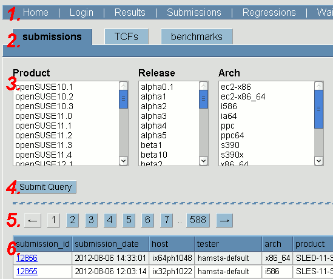
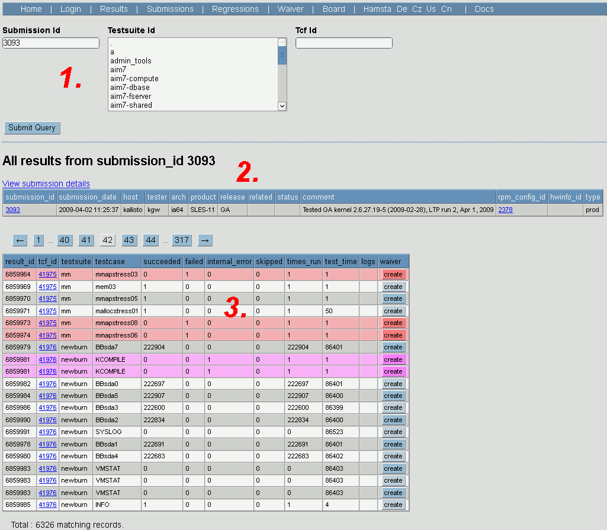
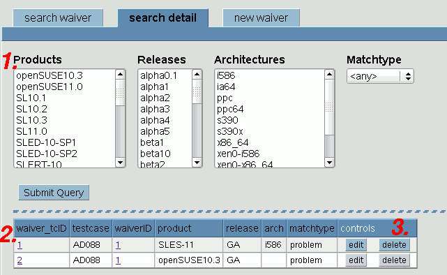

The main function of the QADB web frontend is viewing test result data. It has a multitude of functions:
A TCF file is a file that describes how to run the test. It uses the CTCS2 syntax.
CTCS2 is a QA framework that runs tests, stores result logs, and collects system information.
qa_db_report.pl is a script that puts the CTCS2 logs into QADB.
QADB is the QA DataBase, it holds the parsed test and benchmark data.
QADB web frontend is used to view, analyse, and manipulate the results stored in QADB.

Each individual test is called a testcase.
Results stored for each testcase include information about how many times the testcase ran, whether it succedded, failed, or had internal errors, and what benchmark data it produced (if any).
Benchmark data, if produced, are attached to the results.
Each testcase can produce multiple benchmark numbers. They are associated with benchmark parts, a textual annotation describing the meaning of the data.
A testsuite (also called TCF) is a set of individual testcases.
A TCF group is a record of a single run of a testsuite (a TCF file) on a specific machine. It can contain zero or more results, and is part of a submission. A date of the run and a link to the result logs are attached to every TCF group.
A submission is produced every time a user submits testing data related to one machine. It holds details about product, release, architecture, hwinfo, rpm list, and others, and zero or more TCF groups.
A submission can be of following submission types: a product test, a kernel of the day (KOTD) test, or a maintenance test.
A waiver is a record about a testcase known to be broken. It can apply to all platforms, or just to some (when the testcase is broken only on these platforms). The regression tool uses this information to supress regression reports on known broken tests.
A waiver consists of two parts : waiver main record with the problem description, and zero or more waiver details with information about product, release, and architecture (optional), plus info whether the testcase is broken or works OK on that configuration.
Here follows a brief description of the user interface pages.
Currently you need a MySQL login for that. Ask Vilem Marsik or someone from the QA team to do so.
New users are added by the following command:
GRANT SELECT,INSERT,UPDATE,DELETE ON qadb.* TO <username>@'%' IDENTIFIED BY '<password>';
A page on the frontend usually consists of the following elements:
This is the front page of the QADB web frontend. It contains three important elements:
(Most users will not need this functionality.)
The benchmark statistics table shows what testsuites and testcases contain benchmark data, so that the viewer can easily find them.
The statistics are cached in a separate database table for faster access. The cache can be rebuilt as needed using the "rebuild" link (requires a login).
(Note: The rebuild always rescans the whole data and so can be very time consuming. If you created a new benchmark, it is recommended to import its results first and then start a rebuild.)
This page shows the results of individual tests. This page can be accessed directly using the submission ID (this displays all submission data), or through the submission list (which also allows to filter the data by testsuite).
Page elements:
Failed tests are highlighted in red color; pink highlight marks tests that terminated due to an internal error.
The waiver column contains information about a waiver related to the particular test, and a button that allows to edit the waiver, or add a new one. (See the waiver section for more details.)
This page has multiple sections and provides the following functionality (see following sections for details):
The search form has three tabs allowing for searching in submissions, TCFs and benchmarks. (Some fields in the form will change according to what tab is selected, but in all three modes it allows to search for a product, release, architecture, host, tester, date, activity flag, comment, or submission ID.
After submitting the form, the result table appears:
Click on a submissionID to view submission's details.
This page shows information about a submission.
Elements on this page:
This form allows to edit a submission. It is opened by clicking the 'Edit...' button in the submission information page.
Following fields are available for editing:
(Benchmark search is now integrated with the submissions search.)
This form is located under the tab benchmarks on the submissions page. A set of submission search criteria can be specified, plus a benchmark testsuite.
After submitting, an additional form appears, allowing to specify how the benchmark report should be generated:
After submitting, the benchmark report is generated.
A benchmark report consists of tables and graphs.
Elements in the table:
Elements in the graph:
Usually, the report contains one table and graph for each benchmark. Some benchmarks can produce multiple tables/graphs, when having multiple bench parts that differ in their middle section.
The bench parts describe the meaning of various numeric values from the benchmarks. They are semicolon-separated list of key/value pairs, except for the last item that is the name of numeric units. First pair describes the X-axis, additional pairs are translated into table/graph pairs with the given values.
EXAMPLE: dbench uses following part series by default:
processes=1;sync=0;MB/s processes=2;sync=0;MB/s ... processes=500;sync=0;MB/s
When ran with synchronization, following parts are used:
processes=1;sync=1;MB/s processes=2;sync=1;MB/s ... processes=500;sync=1;MB/s
When mixing the data into one set, two graphs are obtained:
The regression tool compares two submissions, and looks for improvements and regressions in their test results.
The elements on the page:
Entries are color coded: regressions are red, weak regressions are light red, improvements are green, weak improvements are cyan. Testcases with a waiver are printed in bold.
(There is a waiver button for every testcase, allowing for viewing, editing, or adding a waiver.)
The algorithm first compares results from the same testcases, computing the result according to the following table:
| Candidate | |||||
|---|---|---|---|---|---|
| IntErr | Succeeded | Failed | missing | ||
| Reference | IntErr | not shown | Weak Improvement | Weak Regression | missing |
| Succeeded | Weak Regression | not shown | Regression | ||
| Failed | Weak Regression | Improvement | not shown | ||
| missing | missing | not shown | |||
If a waiver is present for some of the testcases, the result is adjusted as shown in the following table. Generally, for tests that are known to be broken, the results are completely hidden; for tests that are possibly broken, the improvement/regression result is weakened.
| Waivers | ||||||||||
|---|---|---|---|---|---|---|---|---|---|---|
| 0 | WRC0 | W | WC0 | WR0 | WR1 | WC1 | WRC1 | WR1C0 | WR0C1 | |
| WI | WI | not shown | ||||||||
| I | I | WI | ||||||||
| WR | WR | |||||||||
| R | R | WR | ||||||||
| M | M | |||||||||
States: WI - weak improvement, I - improvement, WR - regression, R - regression, M - missing
Waivers:
0 - no waiver for that testcase
W - waiver for testcase exists, but neither system matches details (nonexact match)
WC0 - waiver with exact match for candidate, type 'no problem'
WC1 - waiver with exact match for candidate, type 'problem'
WR0 - waiver with exact match for candidate, type 'no problem'
WR1 - waiver with exact match for reference, type 'problem'
WRC0 - waiver with exact match for both candidate and reference, both are of type 'no problem'
WRC1 - waiver with exact match for both candidate and reference, both are of type 'problem'
WR1C0 - waiver with exact match for both candidate and reference, reference is 'problem', candidate is 'no problem'
WR0C1 - waiver with exact match for both candidate and reference, reference is 'no problem', candidate is 'problem'
An exact match means that all testcase, product, release, and architecture match exactly.
The main waiver page allows for searching, viewing, editing, or deleteting main waiver records.
The page elements:
The waiver detail list allows to view, edit, add or delete details related to a main waiver record.
The elements on the page:
Clicking on the waiverID shows the detail page for the waiver.
This form is used to create a new waiver detail, or to edit an existing one. (An overview of the main waiver record is placed on the bottom for easier orientation.)
This form allows to search for waiver details without knowing the master waiver record.
Form elements:
(Clicking on the waiver_tcID number allows to show/edit the detail. Clicking on the waiverID number brings on the master waiver page.)
QADB has a simple board system. Here you can read and write news, messages to QADB users, problems, or wishes about new features.